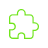
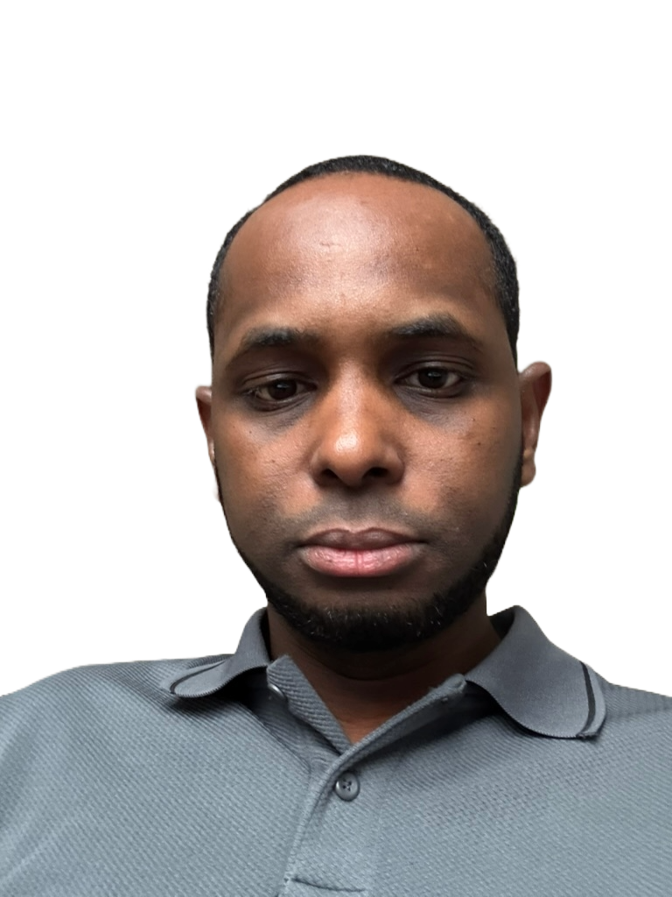

<section>
  <menu>
    <h1>About me</h1>
    <span>Hi, I’m a german speaking Frontend Developer based near Munich. Motivated by the limitless opportunities within IT, I am excited about crafting visually captivating and intuitive websites and applications.</span>
    <div>
      
      <span>
        Flexible in terms of working environments, I can work effectively both on-site in Munich and remotely.
      </span>
    </div>
    <div>
      
      <span>
        I am open-minded and always looking for personal challenges to constantly improve my knowledge and skills.
      </span>
    </div>
    <div>
      
      <span>
        In my profession, programming isn't just about writing code; it's a
        creative form of problem-solving. I take pride in my ability to distill
        complex technical challenges into simple, user-friendly solutions. This
        way, I help you achieve your goals and bring your visions to life.
      </span>
    </div>
  </menu>
  <main >
      
    <p></p>
   
  </main>
</section>


<!--  
<p>
      My name is Hamidou. I am a frontend developer with a passion for creating
      beautiful and functional websites. I have experience in building projects
      with different frontend technologies and concepts. I am always looking to
      expand my knowledge and learn new skills. I am currently looking for new
      opportunities to work on exciting projects and collaborate with other
      developers.
    </p>
-->
